从科研问题出发
先理解研究目标、数据条件和任务边界，再讨论适用的方法、模型与工具；不为用 AI 而用 AI。
一、课程理念
课程沿着科研智能体与科学模型两条主线展开，再通过科研数据、工具调用和端到端工作流把两者连接起来。
先理解研究目标、数据条件和任务边界，再讨论适用的方法、模型与工具；不为用 AI 而用 AI。
用可运行的案例建立直观认识，再拆解数据处理、训练、知识库、记忆与执行；实操要懂为什么。
把编程智能体、科研工具和专业模型用于调研、分析、开发与验证，从单项操作走向可衔接的工作流。
工具输出不等于科学结论；关注结果核验、可复现性与适用边界，把案例方法迁移到自己的研究问题。
二、学习路线
编号只用于资料索引，不必严格按顺序；建议先打模型基础，再进智能体与工程闭环，最后看综合进阶。
神经网络的前向 / 反向与训练流程；科学场景下的数据理解、任务定义与模型选型。
Agent = Model + Harness；Skill 的设计与调用；可解释模型；跨会话记忆与 RAG。
科研数据 Harness、应用生态、CLI & Skill 集成，以及 Loop / Autoresearch 长程保障。
领域基座模型的预训练与迁移，AI Scientist 的实验闭环与天文观测案例。
三、课程目录
每讲 PDF 均可预览或下载；已通读的 03、04 两讲另附合并笔记。封面取自各讲 PDF 首页，仅作索引识别。
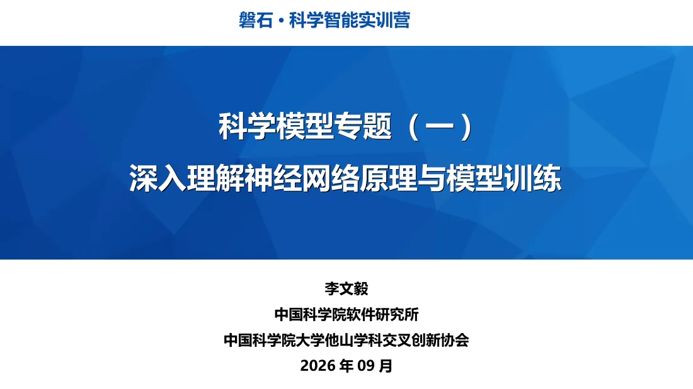
未开始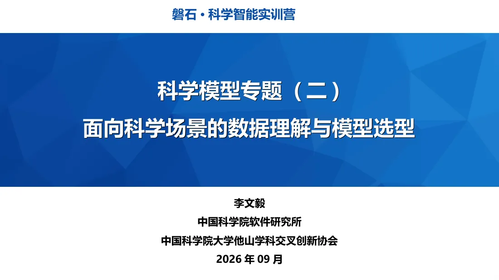
未开始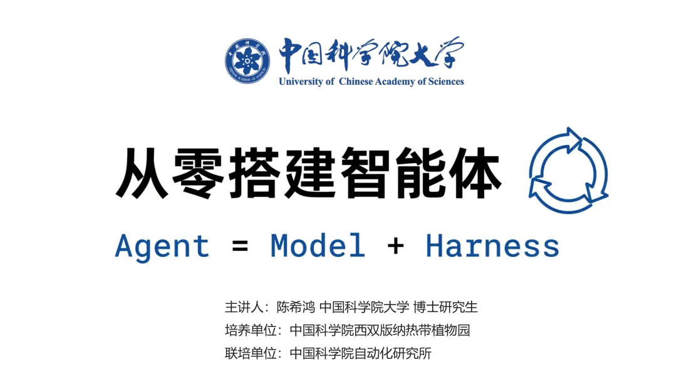
已过课件Agent = Model + Harness：LLM 的两个硬缺陷、Harness 的六件事，以及 ReAct 运行循环。
Task1 图文笔记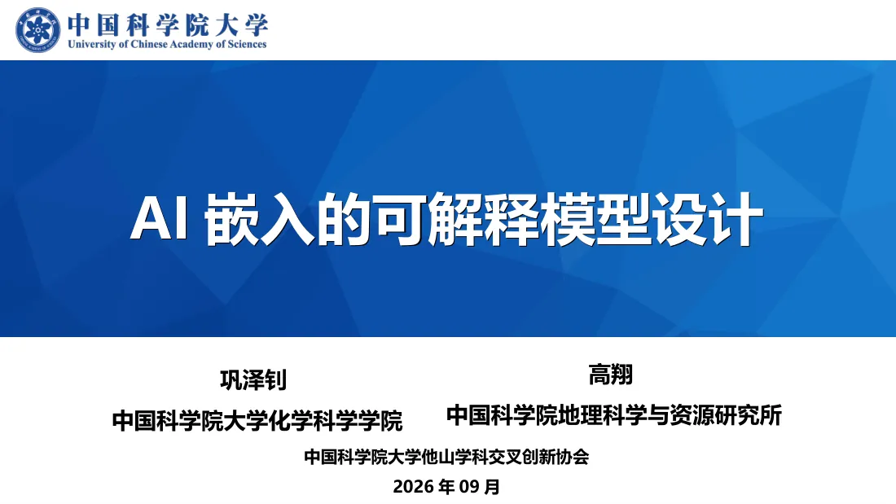
未开始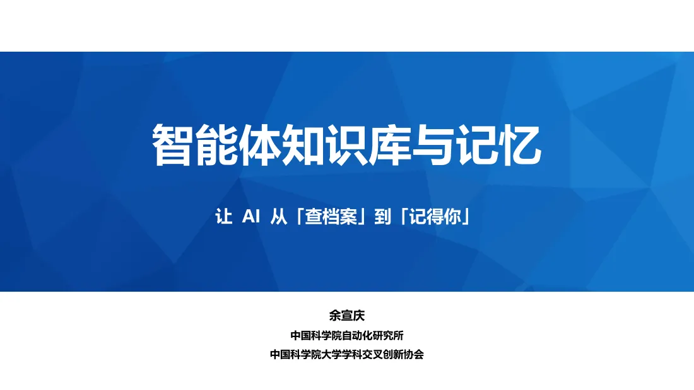
未开始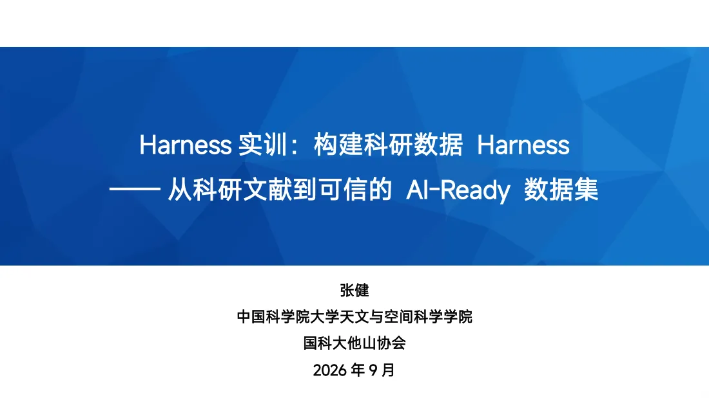
未开始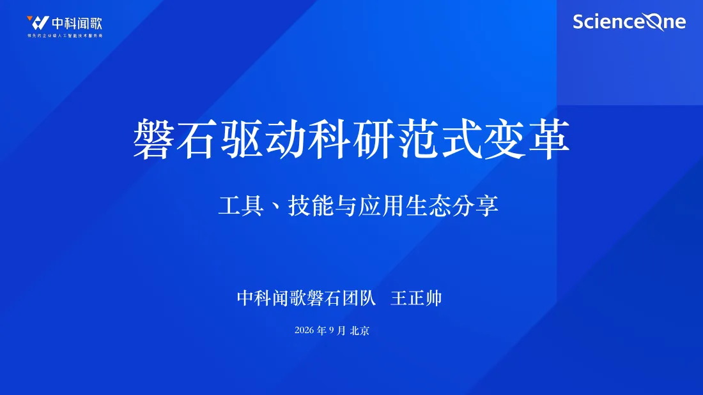
未开始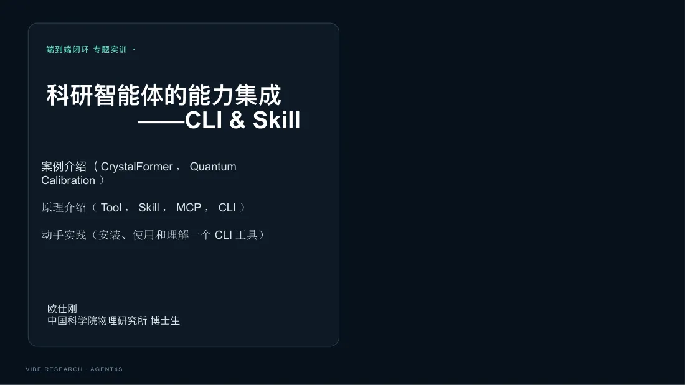
未开始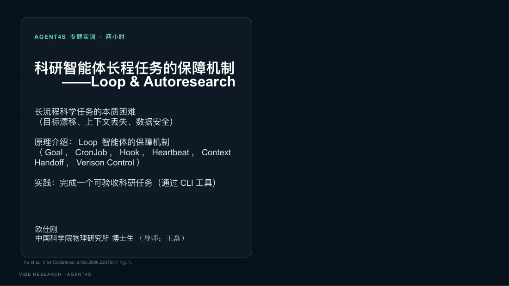
未开始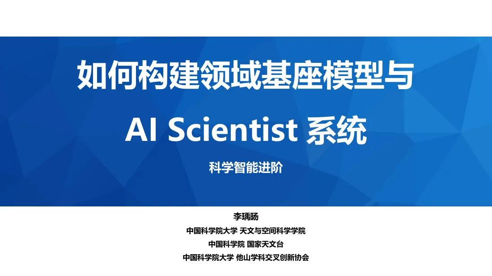
图文资料四、学习进度
进度按「未开始 → 学习中 → 已过课件 → 已完成（笔记 + 习题）」记录，每讲学完补一页笔记。
03、04 两讲已通读并整理成 Task1 笔记；第 11 讲附 29 节图文资料，可先读后看课件。
数据截至 2026-11-16，来源 learning/progress.md。已过课件不等于已完成：习题与复现记录仍待补齐。
五、学习笔记
只写自己的理解，不抄原文。当前已整理 Task1（03 + 04 合并笔记）与第 11 讲图文资料索引，其余 9 讲模板待填。
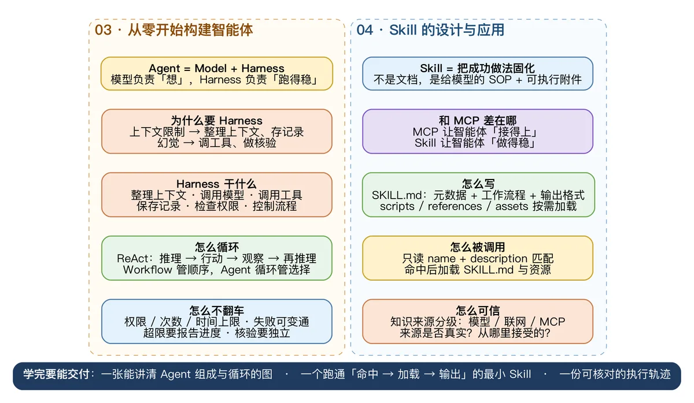
笔记覆盖
03 / 04 已合并为 Task1；11 附图文资料；01、02、05–10 仍为模板。
六、资料与仓库
上游仓库提供官方课件，个人 fork 的 study 分支放学习笔记；main 保持与上游一致。
关于版权：课程内容与课件版权归磐石·科学智能实训营及各讲讲师所有。本页是个人学习索引，只摘录课程标题、页码与自己的理解，不转载课件正文；封面图取自公开 PDF 首页，仅用于讲次识别。
关于状态：进度与页码来自 learning/progress.md，笔记内容以 study 分支为准；尚未推送的本地笔记不会出现在链接里。页面为静态版本，更新笔记后需重新同步本页数据。
引用格式：biociao. 磐石·科学智能（AI for Science）实训营学习笔记[EB/OL]. 2026-11-16.